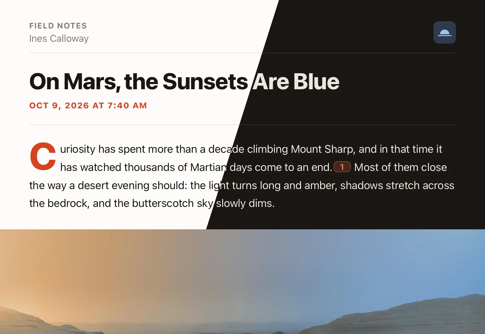
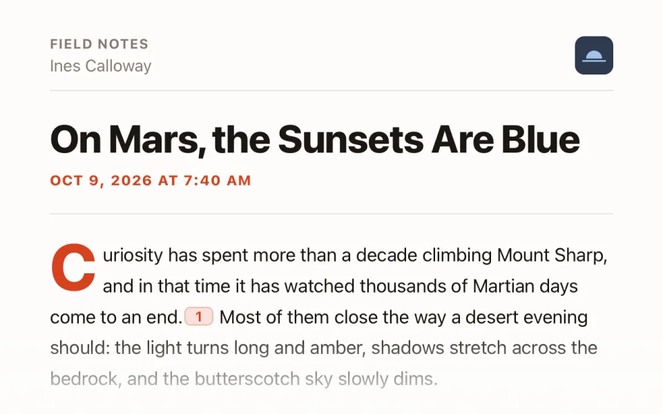
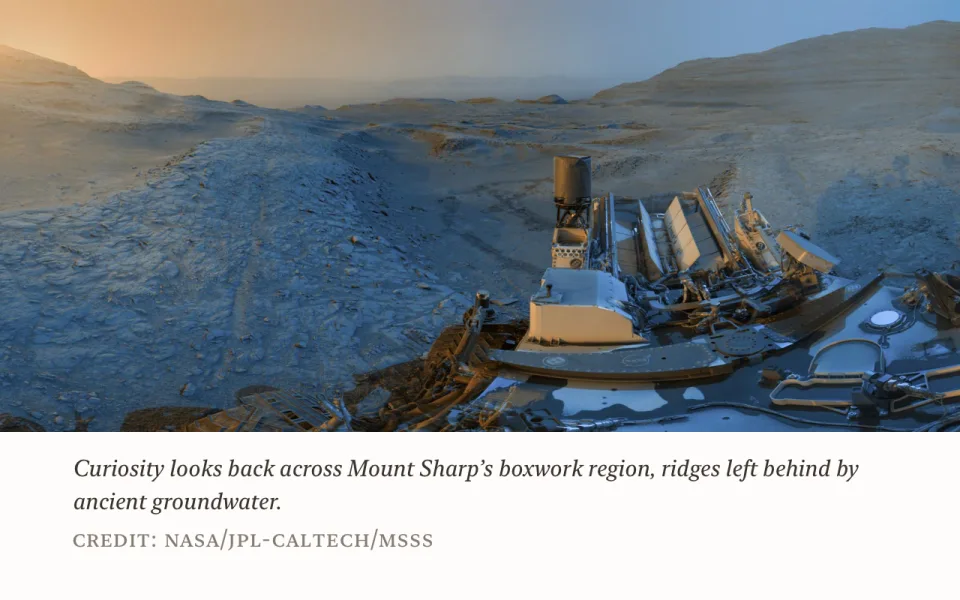
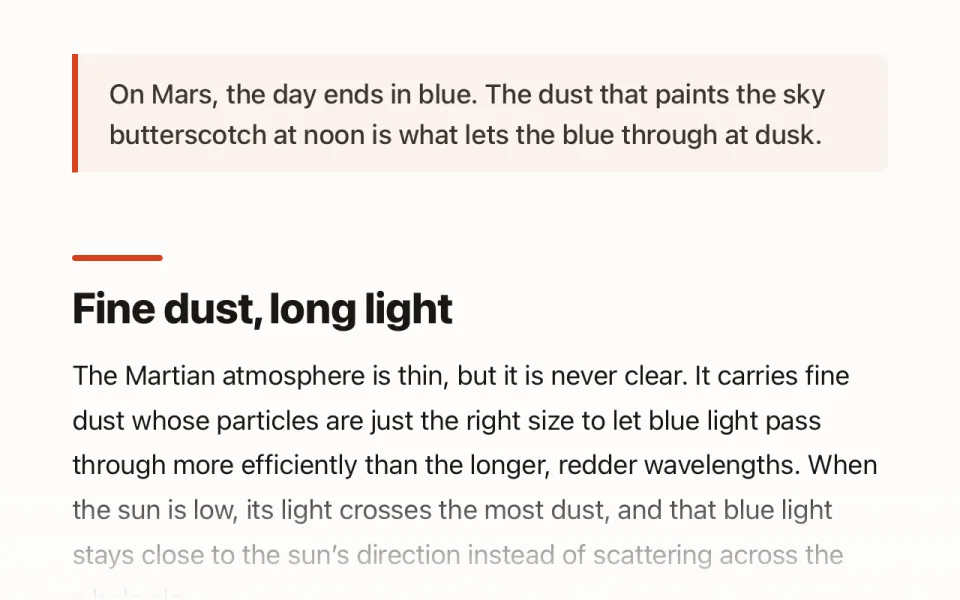
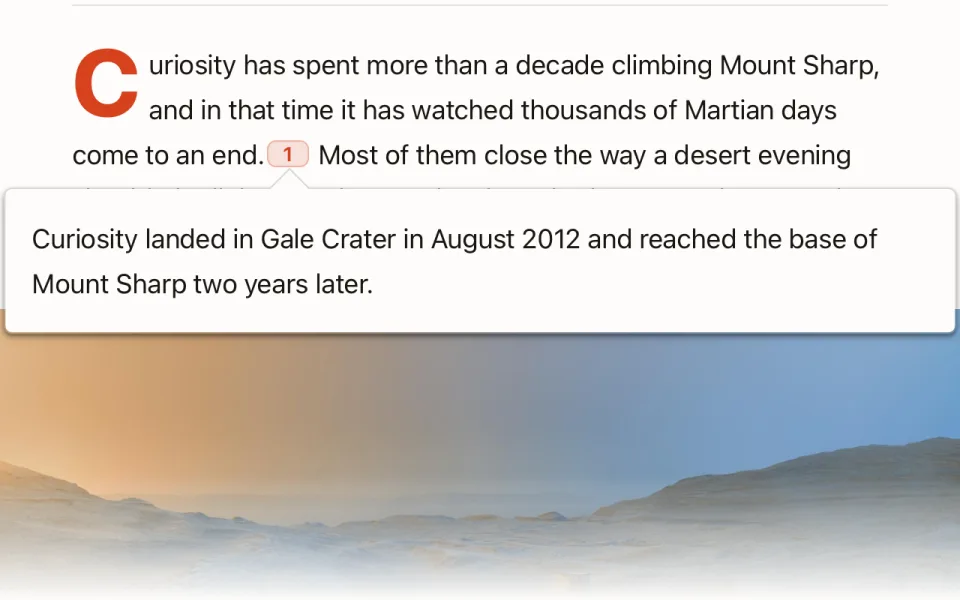
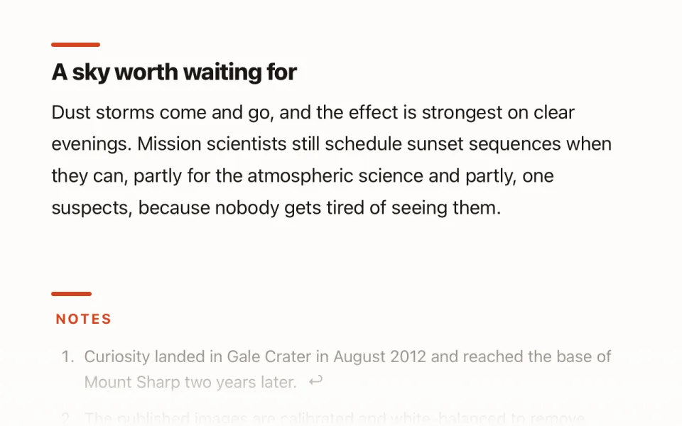
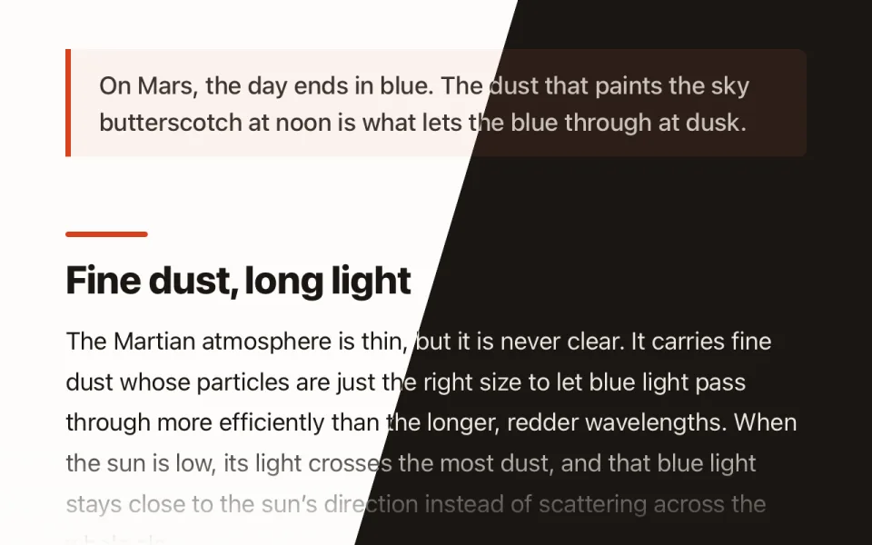
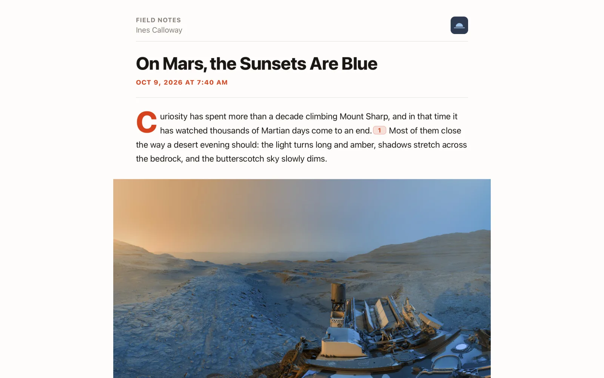
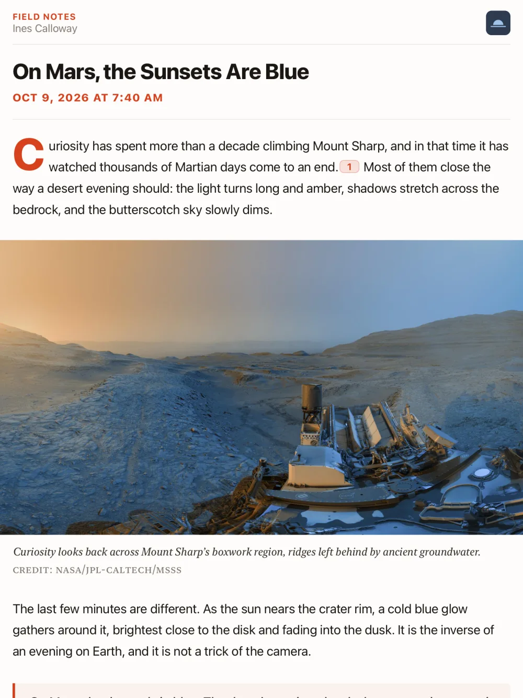
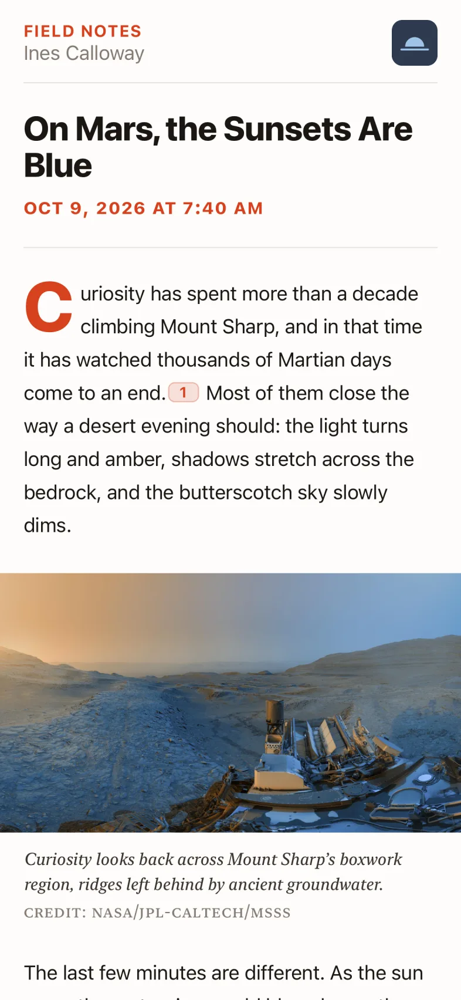

A warm, editorial theme for NetNewsWire that reads like a magazine, with big headlines and drop caps in Apple’s own fonts.

Every screenshot below is the same article in Ember, shown in whichever appearance (light or dark) your system is using.

Headlines get a big, heavy type scale, and the first paragraph opens with an oversized vermilion capital.

Captions are set in serif italic so they don’t read as body text, with photo credits in small caps. Works with WordPress, Ghost, Substack, Medium, etc.

Quotes sit in a tinted panel with an accent rule. A short accent bar marks each section heading, which makes long articles easier to scan.

Tap a footnote marker to read the note in a popover instead of jumping to the bottom of the article. Works with Markdown and Substack footnotes, plus about a dozen WordPress plugins.

The footnote list gets a Notes label and smaller, muted type, so it stays out of the way at the end of the article.

Both modes use a warm background. The accent is vermilion in light mode and a lighter coral in dark mode.
The same design everywhere NetNewsWire runs.



Ember.nnwtheme. On iOS/iPadOS, open the .zip and share it to NetNewsWire.